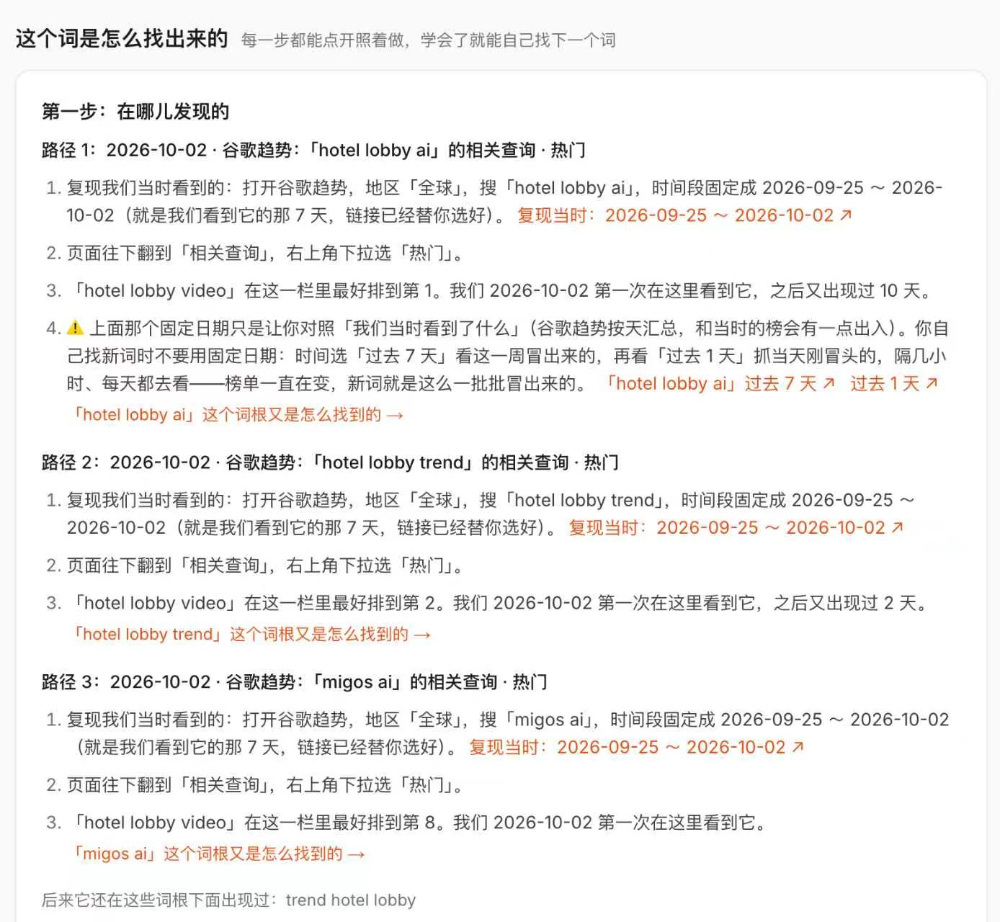

哥飞在「新词服务」的每个关键词页面加了一个模块，主题就叫「这个词是怎么找出来的」：当初在哪一天发现、谷歌趋势里哪条相关查询、排在第几位，全部记下来，并预先构造好能还原现场的谷歌趋势链接。学会这个模块，就能照着同样的步骤自己扒下一个词。
模块里有什么
以 hotel lobby video 为例，模块给出三条发现路径，每条都从「在哪儿发现的」讲起：2026-10-02 的全球谷歌趋势里，三条相关查询的「热门」列表都能看到这个词。
- 搜 hotel lobby ai 的相关查询：hotel lobby video 排在第 1，2026-10-02 第一次看到，之后又出现过 10 天。
- 搜 hotel lobby trend 的相关查询：排在第 2，第一次看到后还出现过 2 天。
- 搜 migos ai 的相关查询：排在第 8，2026-10-02 第一次看到。
每条路径下面还有「这个词根又是怎么找到的」的上一级链接，可以一路往上追溯；页面底部还记录了它后来在这些词根下也出现过：trend hotel lobby。
复现和自用是两个时间段
模块里固定成 2026-09-25 ~ 2026-10-02 的日期，只用来对照「我们当时看到了什么」。谷歌趋势按天汇总，跟当时的实时榜会有出入，自己找词时不要用固定日期。
- 先看「过去 7 天」，找这一周冒出来的词。
- 再看「过去 1 天」，抓当天刚冒头的词。
- 隔几个小时、每天都去看——榜单一直在变，新词就是这么一批批冒出来的。

顺带一条：企业客户可能藏在不属于 Gmail 的登录邮箱里
同一晚的另一条建议：网站只支持谷歌登录时，如果授权进来的邮箱不是 gmail.com 后缀，很可能来的是企业客户——长期付费、对价格不敏感，值得好好伺候。怎样把整条转化链路做好，哥飞让大家参考前一晚发的 《哥飞强推的 AI 辅助精细化运营实操教程》，站内已有 镜像全文。
功能像搭积木：先搭茅草屋，再改石头房
关于网站功能迭代，哥飞的说法是没必要一次成型：先搭一个茅草屋，后面改成石头房，再改成一层楼土木结构，再改成多层，不断叠加、不断改就好了。
原始对话
2026 年 11 月 12 日晚的群聊：哥飞连发三条，讲功能迭代节奏、企业客户识别和新上线的找词溯源模块，虹安和陶宝在截图后接话。原始记录共 6 条，按时间顺序全部保留。
聊天记录（6 条）
参与者 3 人：哥飞、虹安、陶宝 | AI 培训·落地 · 时间范围 2026年11月12日 20:44 至 2026年11月12日 21:39 · 原始 6 条，保留 6 条